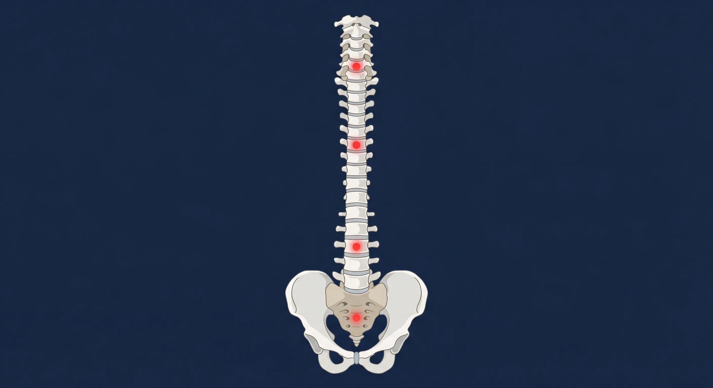
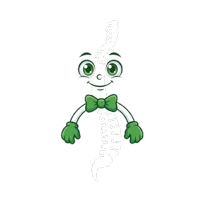

Corregimos la causa real del dolor de columna, cuello, ciática y articulaciones sin cirugía. 42 años de trayectoria clínica profesional en San Salvador y Apopa.
Tratamos la causa de raíz con un enfoque médico completo: biomecánica, nutrición celular, medicina biológica y equilibrio integral.
Alineación manual de alta precisión para corregir vértebras desviadas, liberar nervios espinales y descomprimir hernias discales o ciática sin cirugía.
Recuperación con medicina natural y nutrición ortomolecular en afecciones autoinmunes, sistema nervioso central, problemas vasculares y apoyo oncológico.
Programa especializado que integra ejercicios oculares, nutrición específica, medicamentos homeopáticos y equipos médicos para restaurar la salud visual.
Tratamiento integral de la causa: homeopatía de la emoción, alimentación correcta, ejercicio, sol, descanso y equilibrio mental y espiritual.
Sin remedios empíricos ni maniobras improvisadas: combinamos manipulación articular biomecánica de alta precisión, medicamentos homeopáticos de grado médico y tecnología diagnóstica avanzada para corregir la causa de su dolor sin cirugía.
Alineación manual de alta precisión para corregir desviaciones articulares y liberar nervios comprimidos en toda la columna.
Saber MásDescompresión física vertebral diseñada para aliviar hernias discales, estenosis y dolor lumbar crónico sin cirugía.
Saber MásManipulación neuromuscular profunda para eliminar tensiones crónicas, contracturas severas y mejorar la circulación.
Saber MásEjercicios biomecánicos terapéuticos para corregir vicios posturales provocados por trabajo sedentario y uso de pantallas.
Saber MásProtocolos no invasivos para lumbalgias persistentes, compresión del nervio ciático y dolores articulares resistentes.
Saber MásAlineación articular y muscular para atletas y personas activas, previniendo lesiones y acelerando la recuperación física.
Saber MásRealizamos ultrasonografía, laboratorio y escaneo biofísico. Nota para el paciente: Si ya cuentas con exámenes previos (Rayos X, TAC o resonancias), tráelos a tu consulta; si no los tienes, se realizan en la clínica.
De trayectoria médica clínica resolviendo patologías de columna, articulaciones y enfermedades crónicas.
Evaluación biofísica con escáner cuántico para detectar inflamación en órganos y arterias a tiempo.
Metodología integral: Quiropraxia, Enfermedades Crónicas, Recuperación Visual y Club para Diabéticos.
Las 4 dolencias más frecuentes en consulta son dolor de cabeza, cuello, espalda baja y rodillas. Toca los puntos en la columna o selecciónalos en la cuadrícula lateral para conocer su solución.

42 Años de Experiencia Clínica · Quiropraxia y Medicina Biológica
Estudios base en Madrid, España, y graduado con título y registro oficial del Instituto de Medicina Natural de Guatemala. Pionero en El Salvador en la integración de alineación vertebral biomecánica, homeopatía, homotoxicología y medicina funcional.

Dos sedes equipadas con atención médica profesional y tecnología diagnóstica.
Pacientes reales que recuperaron su movilidad y calidad de vida con nuestros tratamientos biomecánicos y de medicina biológica.
Completa nuestro formulario de síntomas. Nuestro equipo revisará tu caso y te contactará de inmediato por WhatsApp para confirmar tu cita.
+503 2216-1866
💡 Indicación para el paciente: Si tienes exámenes recientes (Rayos X, TAC, resonancia o laboratorio), tráelos a tu consulta para una evaluación más ágil.
Escribe tus síntomas para orientar tu diagnóstico antes de tu llegada a la clínica.